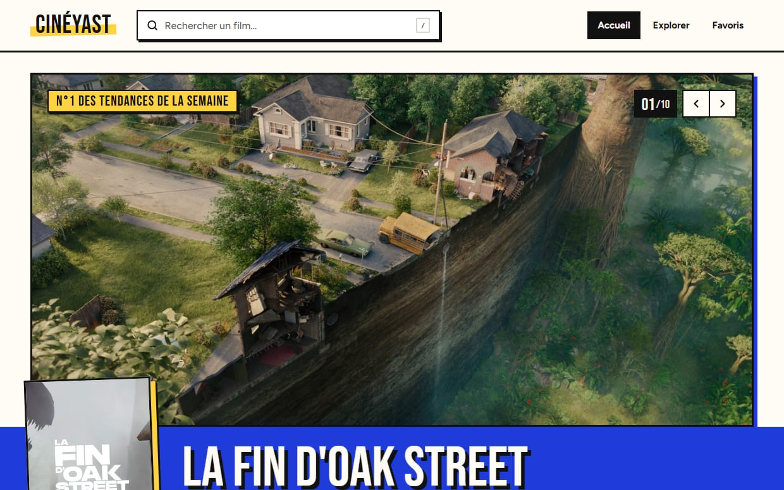
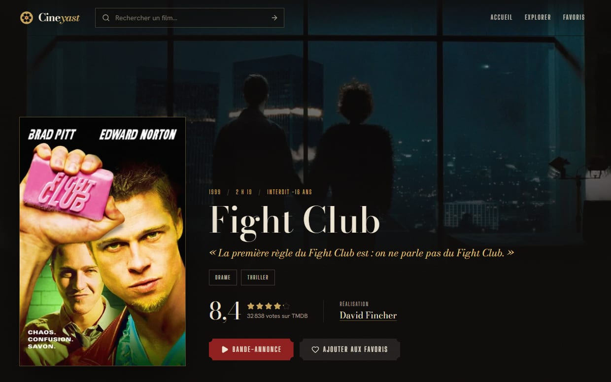
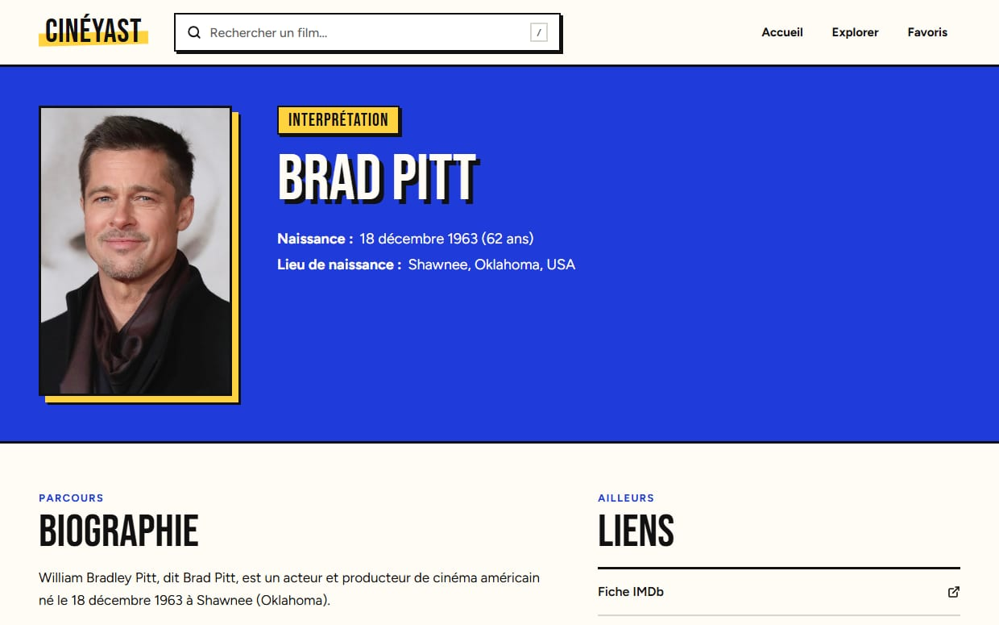

Cineyast.
Un site pour trouver quoi regarder ce soir : les films du moment, une recherche, une fiche par film et par acteur, et où voir chaque film en France.
Un projet à moi, pas une commande : il n'y a pas de client derrière, et je préfère le dire tout de suite.

Un vrai site, pas une maquette.
Le cahier des charges tenait en une page. Trouver des films par tendance, par titre, par genre, par année ou par note. Une fiche complète pour chaque film, bande-annonce comprise. Des favoris qu'on garde sans créer de compte. Et tout ça pensé d'abord pour le téléphone.
Deux règles ne se discutaient pas. Aucune donnée inventée : tout vient de TMDB, une base de films collaborative, avec la mention qu'elle exige en bas de chaque page. Et un site réellement en ligne, sur son propre nom de domaine.
Une fiche par film, une page par acteur.
Et sur l'accueil, deux rangées plus personnelles : les films sortis en salle en France la même semaine il y a 25 ans, et les films belges.

L'affiche, la note, le réalisateur, la bande-annonce. Et où voir le film en France, en abonnement, en location ou à l'achat, d'après les données de JustWatch.

Ses films les plus connus d'abord, puis toute sa filmographie, rangée par métier. Les apparitions dans son propre rôle sont mises à part.
Le travail qui évite les mauvaises surprises.
La clé d'accès reste sur le serveur.
Pour lire la base de films, il faut une clé personnelle. Elle ne passe jamais par le navigateur : un relais l'ajoute de son côté, et il refuse toute demande dont le site n'a pas besoin.
Chaque lien partagé a son propre aperçu.
Partagez la fiche d'un film sur LinkedIn : c'est son titre, son résumé et son image qui s'affichent, pas ceux de l'accueil. Pour un acteur, une image est fabriquée à la volée avec son nom, son métier et ses films connus.
Nouvel hébergement, messagerie intacte.
Le nom de domaine servait à un ancien site et à des adresses mail. Pour le brancher sur le nouvel hébergement, seuls les réglages du site ont changé : ceux de la messagerie n'ont pas été touchés.
Des tests qui ont fait leurs preuves.
Plus de 170 tests vérifient les règles du site, pour la plupart sur de vraies réponses de la base, enregistrées. GitHub les rejoue à chaque modification. Pour m'assurer qu'ils servaient à quelque chose, j'ai remis exprès huit bugs corrigés pendant le projet : les huit ont été repérés.
Pas parfait, et je sais où.
L'affichage sur téléphone
Cineyast est une application qui se construit dans le navigateur, et sur téléphone ça se sent au premier chargement. Pour un site de commerce, je fais l'inverse : des pages prêtes à l'avance, qui s'affichent tout de suite.
Fait avec un assistant IA
Cineyast a été développé avec Claude Code, un assistant de programmation, sous ma direction. Chaque point de cette page a été vérifié sur le site en ligne.
Les outils
React, TypeScript et Tailwind CSS pour le site. L'API TMDB pour les films, JustWatch pour les offres de streaming. Vercel pour l'hébergement, Vitest et GitHub Actions pour les tests.
Un projet en tête ?
Un site de commerce n'a pas besoin de tout ça. Mais le même soin vaut pour le vôtre : des infos justes, un lien qui s'affiche bien quand on le partage, et rien de cassé en route.